Contents
- 1 Introduction
- 2 Basic footnotes
- 3 Naming and referring to a footnote
- 4 Footnote numbering
- 5 Placing notes elsewhere
- 6 Separating the note mark from the note text
-
7
Defining multiple note series
- 7.1 Defining a new note series
- 7.2 Giving each series a distinct numbering style
- 7.3 Configuring the note series independently
- 7.4 Naming notes in a custom series
- 7.5 Defining several editorial series
- 7.6 Placing several series explicitly
- 7.7 Separate series and separate apparatus levels
- 7.8 Choosing between one series and several series
- 8 Margin notes
- 9 Footnote formatting
-
10
Local notes in floats and boxes
- 10.1 Local footnotes in a table
- 10.2 Local notes in a floating object
- 10.3 Keeping local notes separate from ordinary footnotes
- 10.4 Local notes in natural tables
- 10.5 Notes in framed texts and boxes
- 10.6 Local notes inside a framed text
- 10.7 Older ConTeXt versions
- 10.8 Choosing between ordinary and local notes
- 11 Disabling notes and producing selective outputs
- 12 Interactive footnotes and link colours
- 13 Notes in bidirectional documents
- 14 Verbatim material in footnotes
- 15 Continuation marks for multi-page footnotes
- 16 Line notes and critical apparatus
Introduction
Notes are used to attach additional information to a text without interrupting its main flow. They may provide a reference, a clarification, a translation, an editorial comment, or a textual variant. Although the most familiar form is the footnote placed at the bottom of a page, ConTeXt supports a much wider range of note systems.
A note normally involves several distinct elements:
- a mark in the main text;
- the text of the note ;
-
a
note series
, such as
footnoteorendnote; - a counter used to identify the note;
- a placement method , such as the bottom of the page, the margin, or the end of a chapter;
- a notation style controlling the appearance of the mark and of the note entry.
In the simplest case, ConTeXt handles all these elements automatically:
-
\setuppapersize[A7] \starttext ConTeXt places ordinary notes at the bottom of the page.% \footnote{This is the text of the note.} \stoptext
-
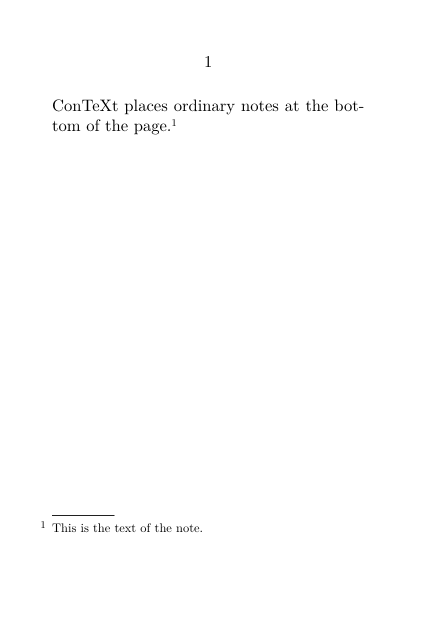
The \footnote command creates both the mark in the text and the corresponding note entry. By default, the note belongs to the predefined footnote series and is placed at the bottom of the current page.
More complex documents may require a different arrangement. Notes can be:
- placed at a chosen location in the text;
- collected at the end of a section, chapter, or document;
- moved into the margin;
- kept local to a table, figure, or framed object;
- arranged in columns or in paragraph form;
- divided into several independent series;
- linked to numbered lines or used as part of a critical apparatus.
ConTeXt distinguishes between the note mark inserted in the running text and the note entry that is composed elsewhere. Two command families therefore occur throughout this page.
\setupnote[footnote][...]
controls the note series, including the mark in the running text and the general placement of the notes, while
\setupnotation[footnote][...]
controls the composition of the note entries, including their numbering, alignment, and the position of the number within the note block.
Basic footnotes
For an ordinary footnote, use \footnote, with the text of the note enclosed in braces:
-
\setuppapersize[A7] \starttext This sentence contains a footnote.% \footnote{This is the text of the footnote.} \stoptext
-
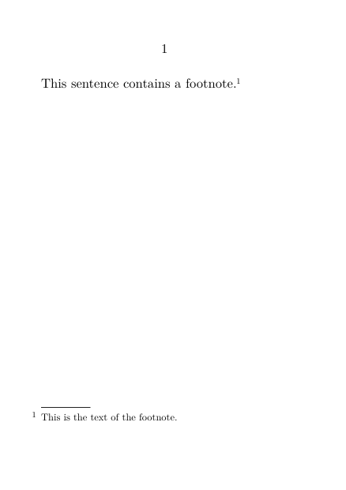
The command inserts a note mark at the point where it occurs and places the corresponding note at the bottom of the page.
The note text may contain ordinary ConTeXt commands and formatting:
-
\setuppapersize[A7] \starttext ConTeXt can format text inside a footnote.% \footnote{A note may contain \emph{emphasized text}, commands, and references.} \stoptext
-
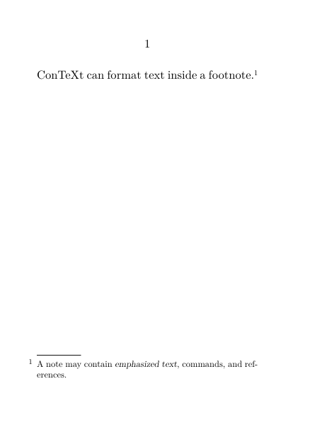
Naming and referring to a footnote
A footnote may be assigned an optional reference:
\footnote[reference]{footnote text}
The reference is an internal identifier. It remains stable even if the printed note number changes because other notes are added, removed, or reordered.
-
\setuppapersize[A7] \starttext This statement has a named footnote.% \footnote[foot:example] {This note has the reference \type{foot:example}.} The mark of the same note can be printed again with \note[foot:example]. \stoptext
-
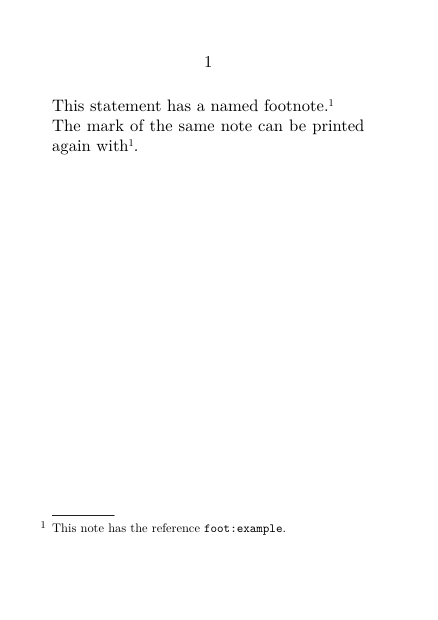
The command \note[reference] prints the mark of an existing note again without repeating the note text.
A named footnote can also be used with ConTeXt's usual cross-reference commands:
\in{footnote}[reference]
\at{page}[reference]
For example:
-
\setuppapersize[A7] \starttext This statement has a note.% \footnote[foot:reference] {This is the referenced footnote.} The note is numbered \in{footnote}[foot:reference] and appears on \at{page}[foot:reference]. \stoptext
-
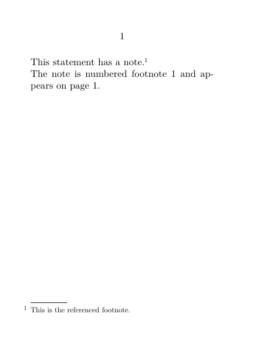
These commands serve different purposes:
| Command | Purpose |
|---|---|
\note[reference]
|
Prints the note mark again. |
\in{footnote}[reference]
|
Refers to the printed note number. |
\at{page}[reference]
|
Refers to the page on which the note appears. |
Footnote numbering
Footnote numbering is controlled with \setupnotation[footnote].
By default, footnotes are numbered consecutively. The way key determines the structural level at which the counter is reset.
Resetting the counter on each page
The following example restarts footnote numbering on every page:
-
\setuppapersize[A7] \setupnotation [footnote] [way=bypage] \starttext First note.% \footnote{This is the first note on the page.} Second note.% \footnote{This is the second note on the page.} \page A note on the next page.% \footnote{The numbering starts again on this page.} \stoptext
-
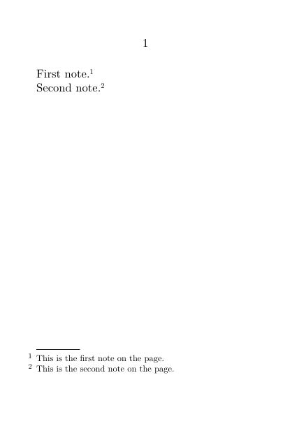
Other possible settings include:
way=bychapter way=bysection way=bytext
The appropriate value depends on the structure of the document and on the desired scope of the numbering.
Changing the printed form of the number
The numberconversion key determines how the counter value is displayed.
For example, the predefined conversion set 2 uses a sequence of traditional footnote symbols, including an asterisk and a dagger:
-
\setuppapersize[A7] \setupnotation [footnote] [way=bypage, numberconversion=set 2] \starttext A note marked with a symbol.% \footnote{The first note.} Another note.% \footnote{The second note.} \stoptext
-
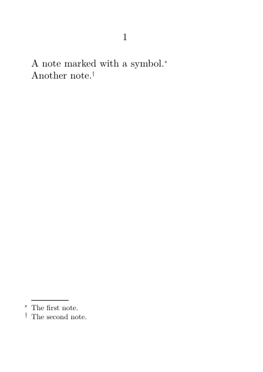
The two settings control different aspects of the numbering:
-
waydetermines how the counter progresses and when it is reset; -
numberconversiondetermines how the current counter value is printed.
Further formatting of the note mark and of the note entry is discussed in the following sections.
Placing notes elsewhere
By default, the predefined footnote series is placed at the bottom of the page. In some documents, however, notes must be collected and printed at another location—for example after a paragraph, at the end of a section, or at the end of a chapter.
To prevent ConTeXt from placing the notes automatically at the bottom of the page, set the location of the note series to text:
\setupnote [footnote] [location=text]
The notes are then stored until they are printed explicitly with \placefootnotes.
Placing footnotes explicitly
Once the footnote series has been assigned the location text, pending notes can be printed at any suitable point in the document:
-
\setuppapersize[A7] \setupnote [footnote] [location=text] \starttext This sentence contains a postponed footnote.% \footnote{This note is not placed automatically at the bottom of the page.} The main text continues before the note is printed. \subject{Notes} \placefootnotes \stoptext
-
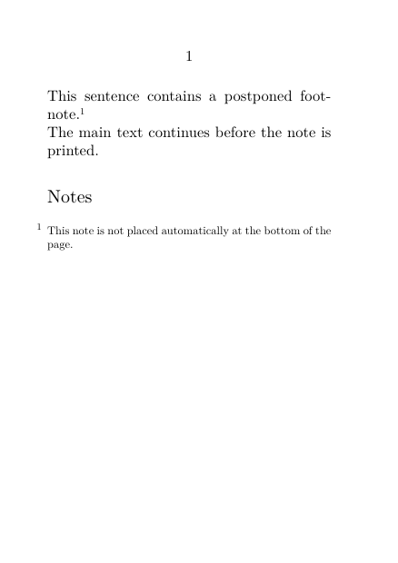
The command \placefootnotes prints all pending notes in the predefined footnote series.
Several notes may be collected before they are placed:
-
\setuppapersize[A7] \setupnote [footnote] [location=text] \starttext First statement.% \footnote{The first postponed note.} Second statement.% \footnote{The second postponed note.} \blank[medium] \placefootnotes \stoptext
-
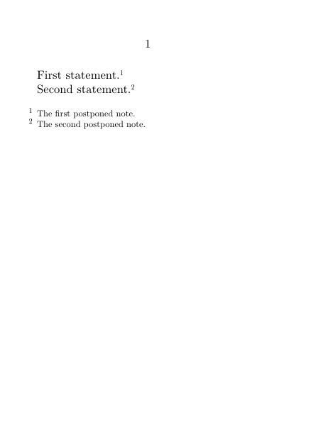
The placement command may appear after a paragraph, at the end of a section, or before the end of a chapter.
Footnotes and endnotes
Postponed footnotes and endnotes are related, but they are not necessarily the same editorial object.
With
\setupnote [footnote] [location=text]
ordinary footnotes are retained and printed later with:
\placefootnotes
ConTeXt also provides a predefined endnote series:
\endnote{Endnote text}
which can be printed with:
\placeendnotes
Use postponed footnotes when the ordinary footnote series merely needs to be placed elsewhere. Use endnotes when the document requires a distinct series of notes intended specifically for placement at the end of a section, chapter, or document.
Footnotes at the end of a chapter
A common editorial requirement is to collect all footnotes at the end of each chapter rather than at the bottom of individual pages.
The simplest method is to postpone the footnote series and place it explicitly before the chapter ends.
-
\setuppapersize[A6] \setupnote [footnote] [location=text] \starttext \startchapter[title={First chapter}] This chapter contains a footnote.% \footnote{This note is printed at the end of the chapter.} Another passage contains another note.% \footnote{This is the second note.} \startsubject[title={Notes}] \placefootnotes \stopsubject \stopchapter \stoptext
-
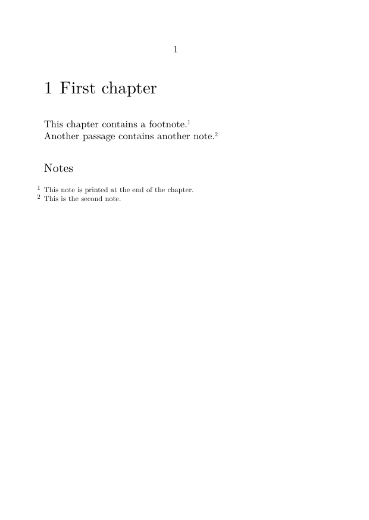
The command \placefootnotes prints all pending notes in the footnote series. It should therefore be placed before \stopchapter.
If this construction is repeated manually, an empty “Notes” section may be produced in chapters without footnotes. It is therefore useful to automate the placement and to test whether any notes are waiting.
Automatic placement after each chapter
The following setup places the pending footnotes automatically at the end of every chapter. It creates no heading when the chapter contains no notes, and uses a singular or plural title according to the number of notes.
\startsetups[chapter:footnotes] \ifcase\rawcountervalue[footnote]\relax % No footnotes: print nothing. \or \startsubject[title={Footnote}] \placefootnotes \stopsubject \else \startsubject[title={Footnotes}] \placefootnotes \stopsubject \fi \stopsetups \setupnote [footnote] [location=text] \setupnotation [footnote] [way=bychapter] \setuphead [chapter] [aftersection=\setups{chapter:footnotes}]
A complete example:
-
\setuppapersize[A6] \startsetups[chapter:footnotes] \ifcase\rawcountervalue[footnote]\relax \or \startsubject[title={Footnote}] \placefootnotes \stopsubject \else \startsubject[title={Footnotes}] \placefootnotes \stopsubject \fi \stopsetups \setupnote [footnote] [location=text] \setupnotation [footnote] [way=bychapter] \setuphead [chapter] [aftersection=\setups{chapter:footnotes}] \starttext \startchapter[title={Chapter with notes}] This chapter contains one note.% \footnote{A note placed automatically at the end of the chapter.} A second note appears here.% \footnote{Another note in the same chapter.} \stopchapter \startchapter[title={Chapter without notes}] This chapter contains no footnotes. \stopchapter \stoptext
-
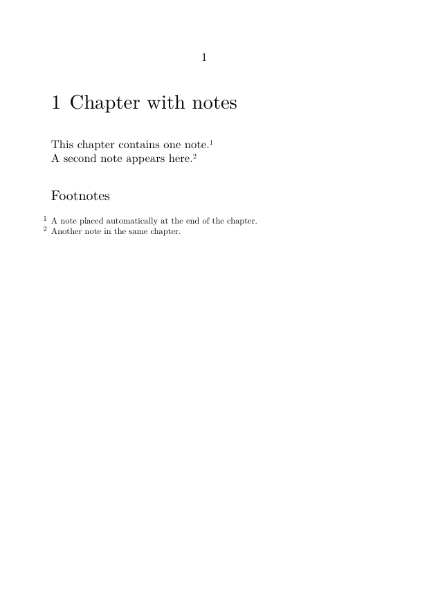
The aftersection key runs the setup when the chapter is closed. For this reason, the structured form
\startchapter ... \stopchapter
should be used consistently.
The setting
way=bychapter
resets the printed numbering at the beginning of each chapter.
For a separate endnote system, use \endnote and \placeendnotes instead of postponing the ordinary footnote series.
Separating the note mark from the note text
The command \footnote normally creates two things at once:
- a note mark in the running text;
- the corresponding note entry.
In some situations, these two elements must be handled separately. ConTeXt provides:
\note[reference]
to print the mark of a note, and
\footnotetext[reference]{note text}
to create the note entry without printing its mark at that point.
This makes it possible to control where the mark appears and where the note text is registered.
Reusing an existing note mark
A named footnote can be referred to again with \note:
-
\setuppapersize[A7] \starttext This statement has a footnote.% \footnote[foot:shared]{This note is attached to more than one place in the text.} The same note mark can appear again here\note[foot:shared]. \stoptext
-
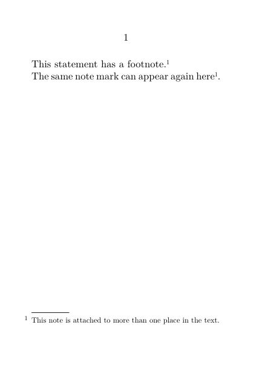
The second occurrence prints only the mark. It does not create a second note entry.
Creating the mark and note text separately
The following example places the mark in the sentence and supplies the note text separately:
-
\setuppapersize[A7] \starttext This sentence contains a manually placed note mark\note[foot:manual].% \footnotetext[foot:manual] {This note text was registered separately from its mark.} \stoptext
-
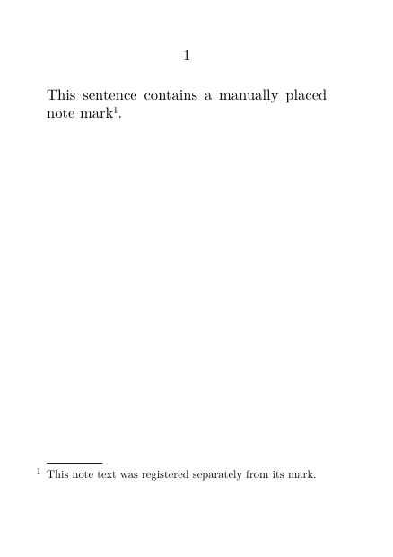
The same reference must be used by both commands:
\note[foot:manual]
\footnotetext[foot:manual]{...}
This method is useful when the normal \footnote command cannot produce the required order or placement.
Multiple references to one note
A single note may be cited from several places:
-
\setuppapersize[A7] \starttext The first reference appears here\note[foot:common]. A second reference to the same note appears here\note[foot:common]. \footnotetext[foot:common] {This single note is shared by both references.} \stoptext
-
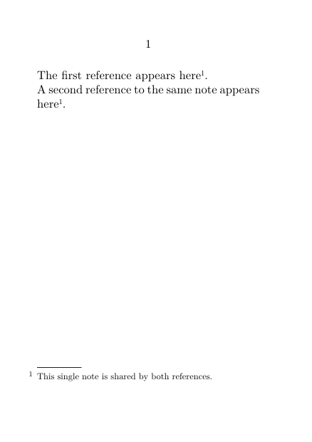
Only one note entry is created, but its mark is printed wherever \note[foot:common] occurs.
Nested footnotes
ConTeXt can place a footnote inside another footnote:
-
\setuppapersize[A7] \starttext This sentence has a footnote.% \footnote {The first note contains another note.% \footnote{This is the nested note.}} \stoptext
-
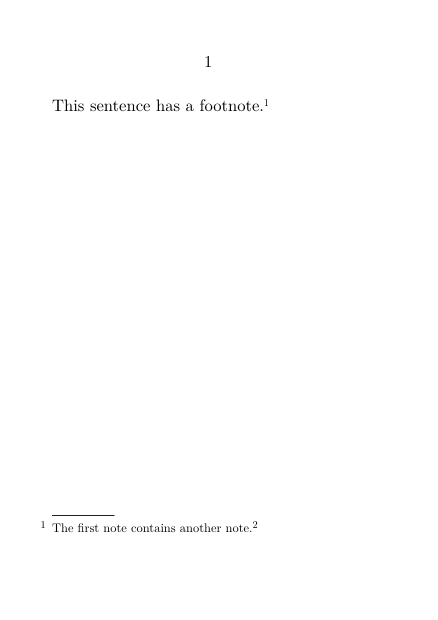
For simple cases, this direct form may be sufficient.
More deeply nested notes, however, may appear in an unexpected order because the inner note is created while the outer note is being composed. In such cases, it is safer to register the additional notes separately in the main text.
Controlled nested footnotes
The following construction creates three levels of notes while preserving their numbering and order:
-
\setuppapersize[A7] \starttext This% \footnote {Or that\note[foot:second], if you prefer.}% \footnotetext[foot:second] {Or possibly the other\note[foot:third].}% \footnotetext[foot:third] {It could be something entirely different.} is a sentence with nested footnotes. \stoptext
-
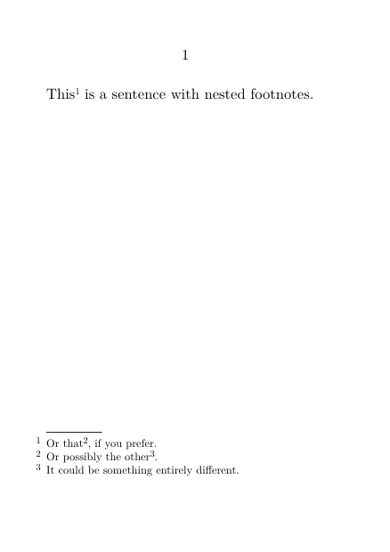
The structure is:
-
the first note is created with
\footnote; -
the second and third note texts are registered with
\footnotetext; -
their marks are inserted inside the preceding notes with
\note.
The percent signs at the ends of the lines prevent unwanted spaces from being inserted into the main sentence.
When to use manual note placement
Use \note and \footnotetext when:
- several passages must refer to the same note;
- the mark and the note text must be created at different points;
- nested notes must appear in a controlled order;
- a custom macro or editorial structure needs to manage marks and entries separately.
For ordinary notes, \footnote remains the simpler and preferred command.
Defining multiple note series
A document may require several kinds of notes with different editorial functions. For example:
- ordinary footnotes may contain bibliographical references;
- editorial notes may comment on the text;
- translation notes may explain linguistic choices;
- critical notes may record textual variants.
Using a single footnote series for all these purposes may make the note apparatus difficult to read. ConTeXt therefore allows additional note series to be defined.
Defining a new note series
A new note series can inherit the behaviour of the predefined footnote series:
\definenote [comment] [footnote]
This definition creates a new command:
\comment{note text}
A minimal example:
-
\setuppapersize[A7] \definenote [comment] [footnote] \starttext This statement has an ordinary footnote.% \footnote{This note belongs to the predefined footnote series.} This statement has an editorial comment.% \comment{This note belongs to the newly defined comment series.} \stoptext
-
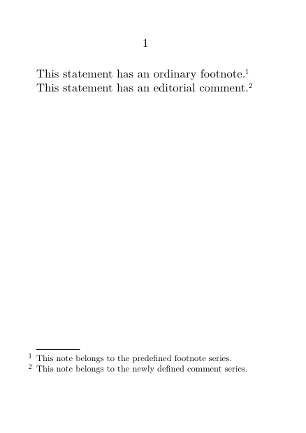
The two notes belong to different series. Each series can therefore be configured independently.
Giving each series a distinct numbering style
The printed form of the note number is configured separately for each series with \setupnotation.
In the following example, ordinary footnotes use Arabic numerals, while editorial comments use lowercase letters:
-
\setuppapersize[A7] \definenote [comment] [footnote] \setupnotation [footnote] [numberconversion=numbers] \setupnotation [comment] [numberconversion=characters] \starttext A statement with an ordinary footnote.% \footnote{Ordinary footnote number one.} A statement with an editorial comment.% \comment{Editorial comment a.} Another ordinary footnote.% \footnote{Ordinary footnote number two.} Another editorial comment.% \comment{Editorial comment b.} \stoptext
-
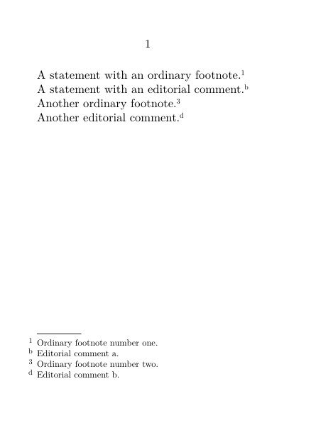
Because the series have independent counters, adding a comment does not change the numbering of the ordinary footnotes.
Configuring the note series independently
Each series can also receive its own body font, alignment, placement, and notation style.
-
\setuppapersize[A7] \definenote [comment] [footnote] \setupnote [footnote] [bodyfont=small] \setupnotation [footnote] [numberconversion=numbers] \setupnote [comment] [bodyfont=small] \setupnotation [comment] [numberconversion=characters, alternative=serried] \starttext This passage has a bibliographical reference.% \footnote{Author, \emph{Title of the work}, p. 25.} This passage also requires an editorial observation.% \comment{The terminology changes in the following paragraph.} \stoptext
-
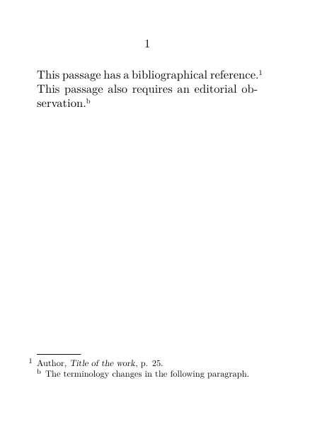
The name used in \setupnote or \setupnotation must match the name given to \definenote:
\definenote[comment][footnote] \setupnote[comment][...] \setupnotation[comment][...]
Naming notes in a custom series
Notes in a newly defined series may also receive references:
\comment[reference]{comment text}
The reference can then be reused with the generic \note command by specifying the series name:
-
\setuppapersize[A7] \definenote [comment] [footnote] \starttext This passage contains an editorial comment.% \comment[comment:terminology] {This comment has a stable internal reference.} The same comment mark can be recalled with \note[comment][comment:terminology]. \stoptext
-
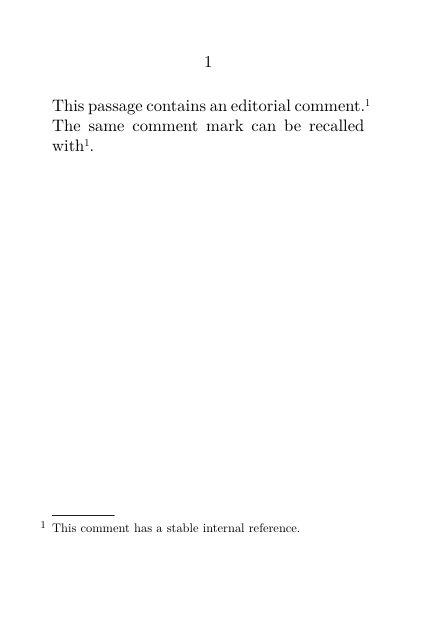
The two arguments identify:
- the note series;
- the reference assigned to the note.
The general form is:
\note[series][reference]
For the predefined footnote series, the abbreviated form
\note[reference]
is normally sufficient.
Defining several editorial series
Several note series can be defined in the same document:
-
\setuppapersize[A6] \definenote [source] [footnote] \definenote [comment] [footnote] \definenote [translation] [footnote] \setupnotation [source] [numberconversion=numbers] \setupnotation [comment] [numberconversion=characters] \setupnotation [translation] [numberconversion=romannumerals] \starttext The passage has a source note.% \source{Bibliographical or documentary reference.} It also requires an editorial comment.% \comment{A remark concerning the interpretation of the passage.} A foreign expression may need a translation note.% \translation{An explanation of the chosen translation.} \stoptext
-
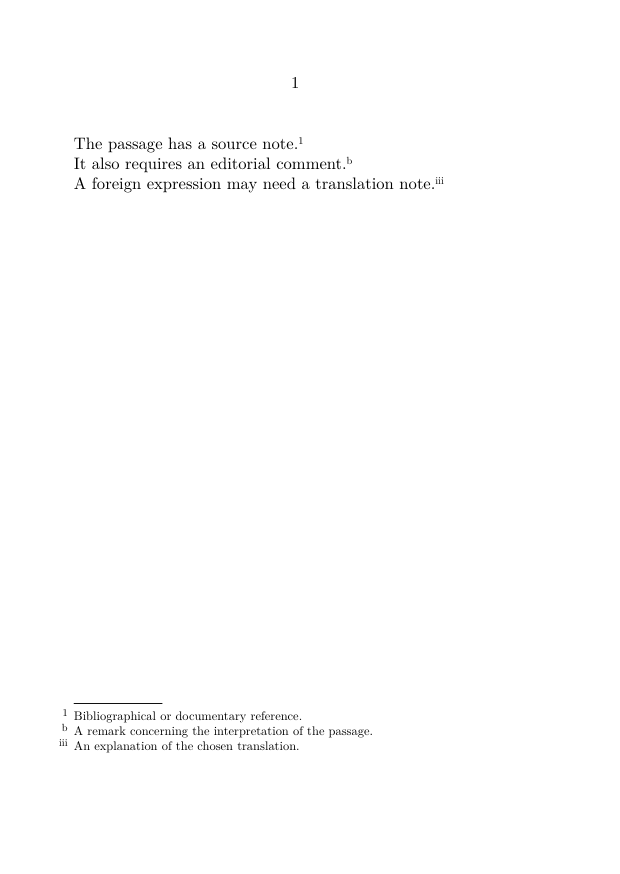
The command names should describe the editorial function of the notes rather than their visual appearance. Names such as
source comment translation variant gloss
remain meaningful even if the typography of the document is later changed.
Placing several series explicitly
A custom note series can be postponed and placed explicitly in the same way as ordinary footnotes.
-
\setuppapersize[A6] \definenote [comment] [footnote] \setupnote [footnote] [location=text] \setupnote [comment] [location=text] \starttext This sentence contains an ordinary footnote.% \footnote{A bibliographical note.} This sentence contains an editorial comment.% \comment{An interpretative comment.} \subject{Footnotes} \placefootnotes \subject{Editorial comments} \placenotes[comment] \stoptext
-
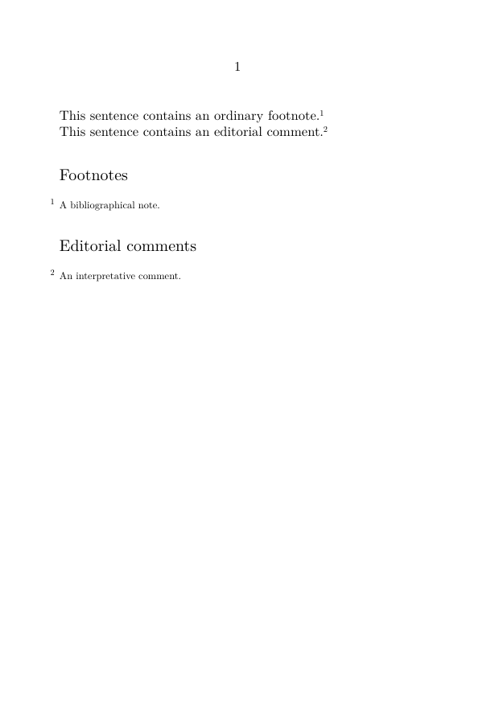
The predefined footnote series has the convenient placement command:
\placefootnotes
A custom series can be placed with:
\placenotes[comment]
This allows several note groups to be printed in a chosen order.
Separate series and separate apparatus levels
Defining several note series gives each series:
- its own counter;
- its own numbering style;
- its own formatting;
- its own placement settings;
- its own placement command.
This does not necessarily mean that ConTeXt will automatically produce visibly separated apparatus levels at the bottom of every page. The final result depends on how the series are configured and placed.
There are two main possibilities:
- several series are allowed to appear together in the page note area;
- each series is postponed and placed as a separate block.
The second method is useful when a document requires distinct apparatus levels, for example:
Textual variants Linguistic notes Translation notes
A more advanced example of several independently formatted apparatus levels is discussed later in this page.
Choosing between one series and several series
Use a single note series when all notes have the same function and presentation.
Define several series when the notes differ in one or more of the following ways:
| Difference | Possible reason for a separate series |
|---|---|
| Editorial function | Bibliographical references, textual variants, and translation notes serve different purposes. |
| Numbering | One series uses numbers, another letters or symbols. |
| Placement | One series appears at the bottom of the page, another at the end of the chapter. |
| Formatting | One series is discursive, another is compact or set in paragraph form. |
| Output | A reading edition may suppress one series while retaining another. |
A separate note series should represent a genuine structural distinction in the document, not merely a temporary visual difference.
Margin notes
ConTeXt provides several ways to place annotations in the margin. It is useful to distinguish between:
-
a simple marginal remark placed directly with
\inmargin; - a numbered note series whose entries are moved into the margin;
- margin notes aligned as closely as possible with the line containing their reference.
These methods serve different purposes and should not be confused.
Simple marginal remarks
For a short remark that does not belong to a numbered note series, use \inrightmargin:
-
\setuppapersize[A5] \setuplayout [width=8cm, rightmargin=3cm, rightmargindistance=.5cm] \starttext This sentence contains a marginal remark.% \inrightmargin{A short note in the margin.} The remark is placed beside the main text and does not use the footnote counter. \stoptext
-
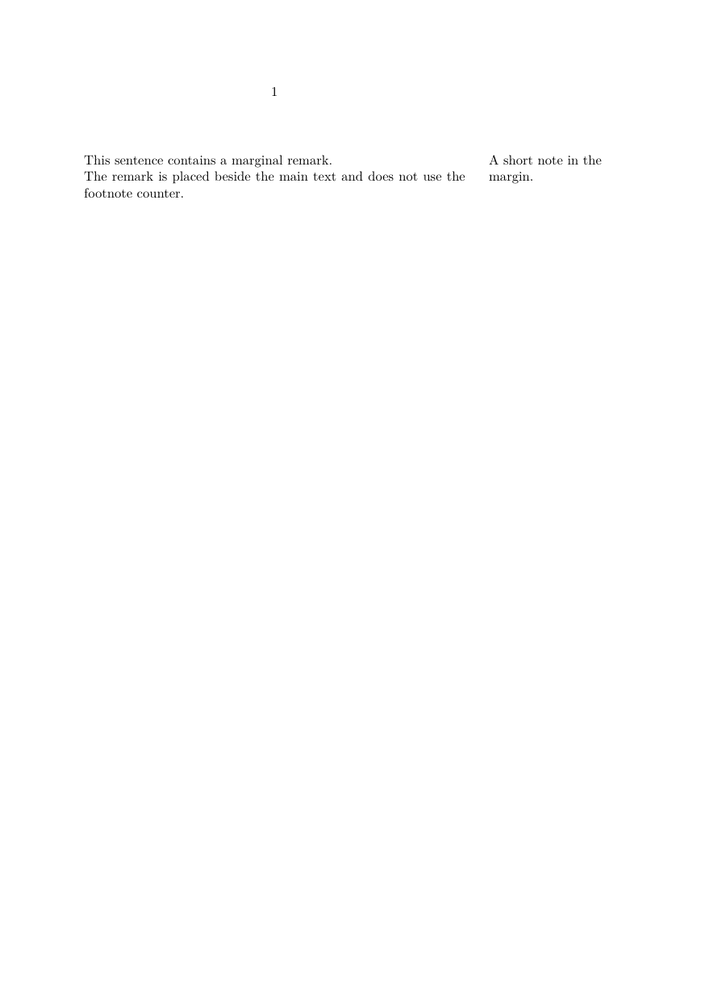
Placing a note series in the margin
A numbered series of notes can also be collected and printed in the margin. In this case, the notes remain part of the footnote series, but their ordinary placement at the bottom of the page is disabled.
\setupnote [footnote] [location=none] \setupnotation [footnote] [alternative=serried, align=flushleft, width=broad]
The pending notes can then be placed in the margin with \placenotes[footnote].
-
\setuppapersize[A5] \setuplayout [width=8cm, rightmargin=4cm, rightmargindistance=.5cm] \setupnote [footnote] [location=none] \setupnotation [footnote] [alternative=serried, align=flushleft, width=broad] \setuptexttexts [margin] [] [{\framed [frame=off, width=\rightmarginwidth, height=\textheight, align={right,bottom}] {\placenotes[footnote]}}] \starttext The first statement has a numbered note.% \footnote{The first note is placed in the right margin.} The second statement has another note.% \footnote{The second note belongs to the same series.} \stoptext
-
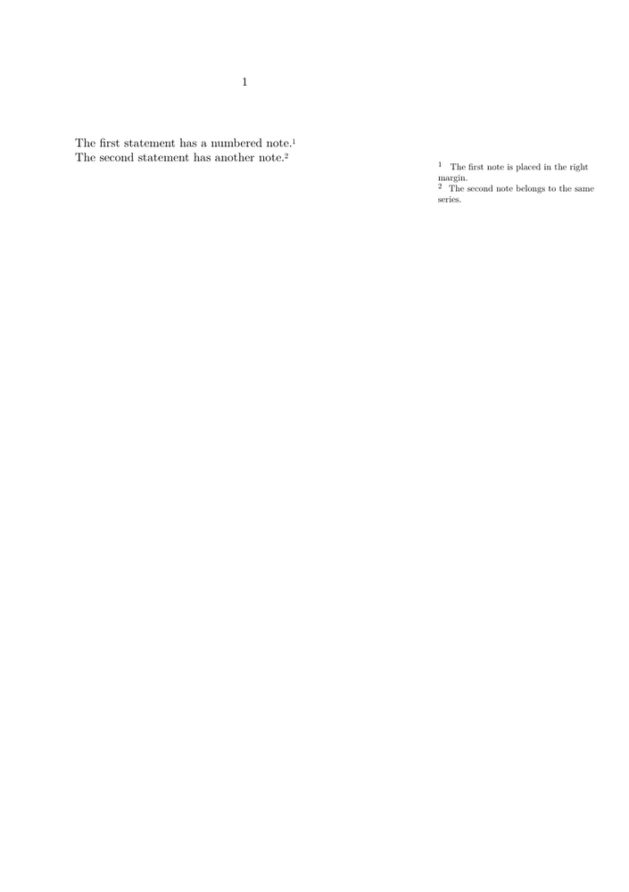
Margin notes aligned with their references
A more demanding layout places each numbered note near the line containing its mark. The following method flushes pending notes into the right margin after each footnote entry.
-
\setuppapersize[A5] \setuplayout [width=8cm, rightmargin=4cm, rightmargindistance=.5cm] \setupmargindata [right] [width=\rightmarginwidth, stack=continue, style=small, align=flushleft] \define\PlaceFootnote {\inright {\vtop {\placelocalnotes [footnote] [before=, after=]}}} \setupnote [footnote] [location=text, bodyfont=small, next=\PlaceFootnote] \setupnotation [footnote] [alternative=serried, width=broad, distance=.5em] \starttext A first sentence with a numbered margin note.% \footnote{This note is placed near its reference.} \blank[medium] A second sentence with another numbered margin note.% \footnote{This note is also placed in the right margin.} \stoptext
-
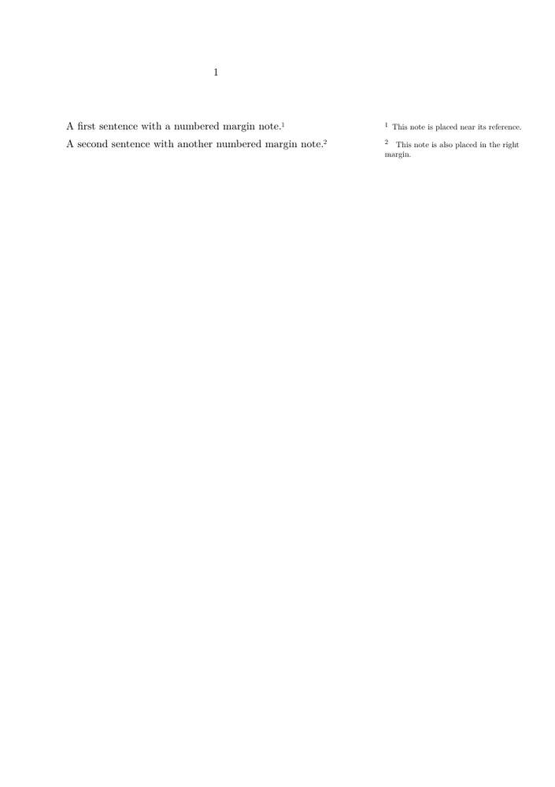
Footnote formatting
The appearance of a footnote involves two related but distinct elements:
- the note mark inserted in the running text;
- the note entry placed at the bottom of the page or at another chosen location.
The settings of the footnote series can therefore involve both \setupnote and \setupnotation.
In general:
-
\setupnote[footnote][...]controls the note series, its mark in the running text, and its general placement; -
\setupnotation[footnote][...]controls the presentation of the note entries and their numbers.
The following sections show some common formatting requirements.
Formatting the note text
The font used for footnotes can be changed independently of the main text. The bodyfont key selects a body-font size for the note series.
-
\setuppapersize[A7] \setupnote [footnote] [bodyfont=small] \starttext The main text uses the normal body-font size.% \footnote{This footnote is typeset with the smaller body font.} \stoptext
-
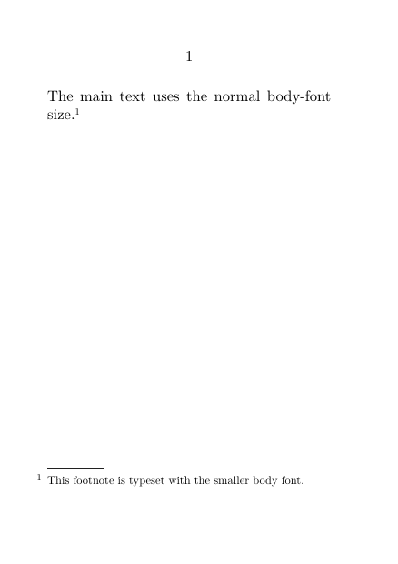
The note text may also contain ordinary local formatting commands:
-
\setuppapersize[A7] \starttext This sentence has a formatted note.% \footnote {The note may contain \emph{emphasized text}, {\bf bold text}, or other ConTeXt commands.} \stoptext
-
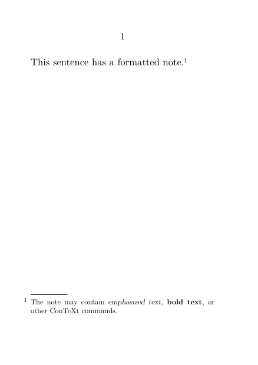
Local formatting affects only the material enclosed in the corresponding group.
Changing the interline spacing
The line spacing of footnotes can be changed without modifying the interline spacing of the main text. A named setup can be applied whenever ConTeXt composes the note entries:
-
\setuppapersize[A7] \startsetups[footnote:interlinespace] \setupinterlinespace [line=2.8ex] \stopsetups \setupnote [footnote] [setups=footnote:interlinespace] \starttext This sentence contains a longer footnote.% \footnote {This note extends over several lines so that the independent interline spacing can be seen clearly in the resulting note block.} \stoptext
-
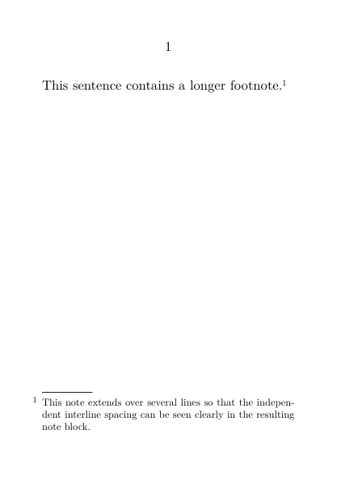
The setup is applied only while the footnote is being composed.
Controlling alignment and hyphenation
The alignment of note text can be configured independently of the surrounding text.
For example, hyphenation can remain enabled in footnotes even when it is disabled in the main text:
-
\setuppapersize[A7] \setupnote [footnote] [align={normal,hyphenated}] \starttext \setupalign [nothyphenated, stretch, tolerant] The main paragraph is composed without hyphenation.% \footnote {The note uses its own alignment settings and may therefore be hyphenated independently of the main paragraph.} \stoptext
-
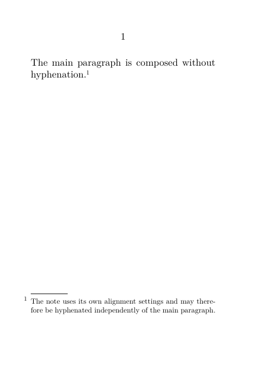
The exact effect depends on the width of the text area, the language, and the available hyphenation patterns.
Positioning the note number
The position of the number within each note entry is controlled with \setupnotation.
By default, the number may hang into the left side of the note area. The following example reserves a fixed-width area for the number and aligns it with the left edge of the note text:
-
\setuppapersize[A7] \showframe \setupnotation [footnote] [location=left, width=1cm] \setupnote [footnote] [location=page, numbercommand=] \starttext A sentence with a footnote.% \footnote{The note number is placed in a one-centimetre-wide area.} \stoptext
produces
-
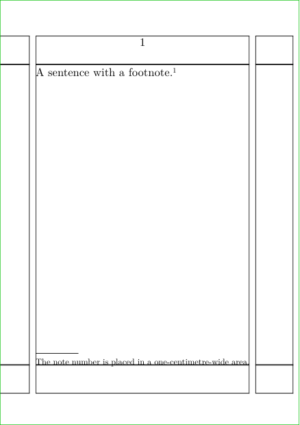
The relevant keys include:
location=left width=1cm distance=.5em hang=1
Their effect depends on the selected notation alternative and on the desired relationship between the number and the note text.
For more specialized formatting, a command can be applied to the note number:
\setupnote
[footnote]
[margindistance=0em,
command=\MyFootnoteNumber]
\setupnotation
[footnote]
[location=left,
hang=1]
\define[1]\MyFootnoteNumber
{\hbox to 1.5em{#1.\hss}}
This reserves a fixed width of 1.5em and adds a full stop after the number.
Footnotes in columns
When a page contains many short notes, the note block can be divided into several columns with the n key:
-
\setuppapersize[A6] \setupnote [footnote] [n=2] \starttext First statement.% \footnote{First short note.} Second statement.% \footnote{Second short note.} Third statement.% \footnote{Third short note.} Fourth statement.% \footnote{Fourth short note.} \stoptext
-
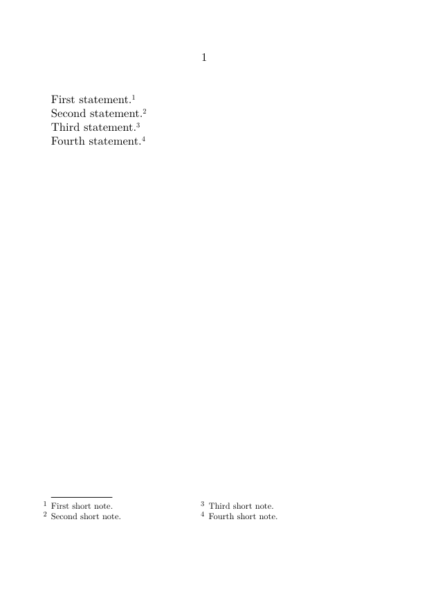
The value of n specifies the number of columns:
\setupnote [footnote] [n=2]
Column layout is most suitable for numerous short notes. Long notes may be easier to read in a single column.
Footnotes in paragraph form
A compact apparatus may require successive notes to be composed in a continuous paragraph rather than as separate vertical entries.
Use:
\setupnote [footnote] [paragraph=yes]
together with a compact notation style:
-
\setuppapersize[A6] \setupnote [footnote] [paragraph=yes] \setupnotation [footnote] [alternative=serried, width=broad, distance=.5em, display=no] \starttext First statement.% \footnote{First compact note.} Second statement.% \footnote{Second compact note.} Third statement.% \footnote{Third compact note.} Fourth statement.% \footnote{Fourth compact note.} \stoptext
-
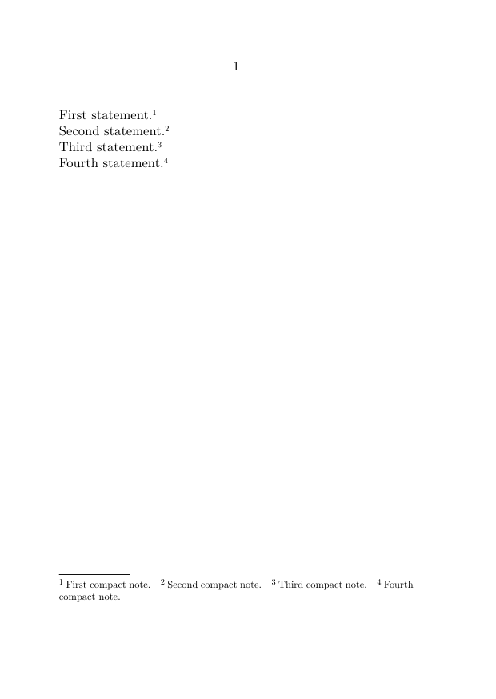
The settings serve complementary purposes:
-
paragraph=yesplaces successive note entries in paragraph form; -
alternative=serriedgives the entries a compact inline arrangement; -
distancecontrols the space between the number and the note text; -
width=broadhelps maintain separation between adjacent entries; -
display=noprevents each entry from behaving like a separate displayed block.
Paragraph form is especially useful for textual notes and compact critical apparatuses. It is less suitable for long discursive notes.
Local notes in floats and boxes
Footnotes inside tables, figures, framed texts, and other boxed material require special care.
An ordinary footnote belongs to the main note series of the document. A floating object, however, may be moved away from the point where it was defined. If an ordinary footnote is used inside such an object, the note may be placed on the wrong page or appear in the wrong order.
ConTeXt provides local notes for this purpose. A local note series is temporarily isolated from the main footnote series and is placed together with the object to which it belongs.
The general structure is:
\startlocalfootnotes content containing footnotes \placelocalfootnotes \stoplocalfootnotes
The commands have complementary roles:
-
\startlocalfootnotesstarts a local note context; -
ordinary
\footnotecommands inside that context belong to the local series; -
\placelocalfootnotesprints the notes collected locally; -
\stoplocalfootnotescloses the local note context.
Local footnotes in a table
The following example places the notes immediately below the table rather than in the main footnote area of the page:
-
\setuppapersize[A6] \starttext \startlocalfootnotes \placetable [here] {A table with local footnotes} {\placelegend {\bTABLE \bTR \bTH First column \eTH \bTH Second column \eTH \eTR \bTR \bTD East\footnote{A note attached to the first table entry.} \eTD \bTD North \eTD \eTR \bTR \bTD West \eTD \bTD South\footnote{A note attached to the final table entry.} \eTD \eTR \eTABLE} {\placelocalfootnotes}} \stoplocalfootnotes \stoptext
-

The table and its notes form a single local structure. The notes do not enter the main footnote series of the document.
The command \placelegend provides two areas:
- the main table or figure;
- the material placed beneath it, here the local notes.
This method is suitable when the notes belong specifically to the contents of the table and should remain visually attached to it.
Local notes in a floating object
A caption may also contain a note. Since the caption belongs to the float, the note should normally travel with it.
-
\setuppapersize[A6] \starttext \startlocalfootnotes \placetable [here] {A table caption with a note% \footnote{This note belongs to the table caption.}} {\placelegend {\bTABLE \bTR \bTD One \eTD \bTD Two \eTD \eTR \bTR \bTD Three \eTD \bTD Four \eTD \eTR \eTABLE} {\placelocalfootnotes}} \stoplocalfootnotes \stoptext
-

Local notes may therefore be used for notes attached to:
- table cells;
- figure contents;
- captions;
- legends;
- other material that belongs to a floating object.
Keeping local notes separate from ordinary footnotes
Local footnotes do not disturb the numbering of ordinary footnotes outside the local context.
-
\setuppapersize[A6] \starttext An ordinary footnote appears here.% \footnote{This belongs to the main footnote series.} \startlocalfootnotes \placetable [here] {A table with a local note} {\placelegend {\bTABLE \bTR \bTD A table entry\footnote{This note belongs only to the table.} \eTD \eTR \eTABLE} {\placelocalfootnotes}} \stoplocalfootnotes Another ordinary footnote appears here.% \footnote{This again belongs to the main footnote series.} \stoptext
-
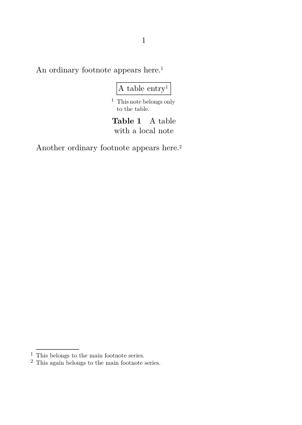
This separation is useful when a document contains both ordinary commentary and notes specific to individual tables or figures.
Local notes in natural tables
When local notes are placed below a natural table, the note block may need to be wrapped in a frame so that its width and alignment follow the table correctly.
The following helper removes the visible frame while preserving a controlled note area:
\defineframed [localnoteframe] [width=\hsize, frame=off, top=\hbox\bgroup, bottom=\egroup]
A complete example:
-
\setuppapersize[A6] \defineframed [localnoteframe] [width=\hsize, frame=off, top=\hbox\bgroup, bottom=\egroup] \starttext \startlocalfootnotes \placetable [here] {A natural table with local notes} {\placelegend {\bTABLE \bTR \bTD One\footnote{First local note.} \eTD \bTD Two\footnote{Second local note.} \eTD \eTR \bTR \bTD Three\footnote{Third local note.} \eTD \bTD Four\footnote{Fourth local note.} \eTD \eTR \eTABLE} {\localnoteframe{\placelocalfootnotes}}} \stoplocalfootnotes \stoptext
-
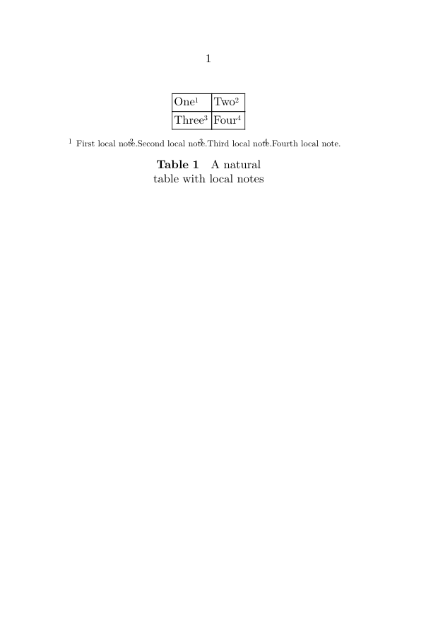
The frame is invisible. Its purpose is to provide a stable horizontal area for the local note block.
Notes in framed texts and boxes
A framed text or another boxed construction may also contain footnotes.
In current LMTX, many notes inside boxes are migrated automatically and can be handled without additional commands. The following simple example places an ordinary footnote inside a framed text:
-
\setuppapersize[A6] \starttext \startframedtext [width=\textwidth] This framed paragraph contains a footnote.% \footnote{A note originating inside the framed text.} \stopframedtext \stoptext
-
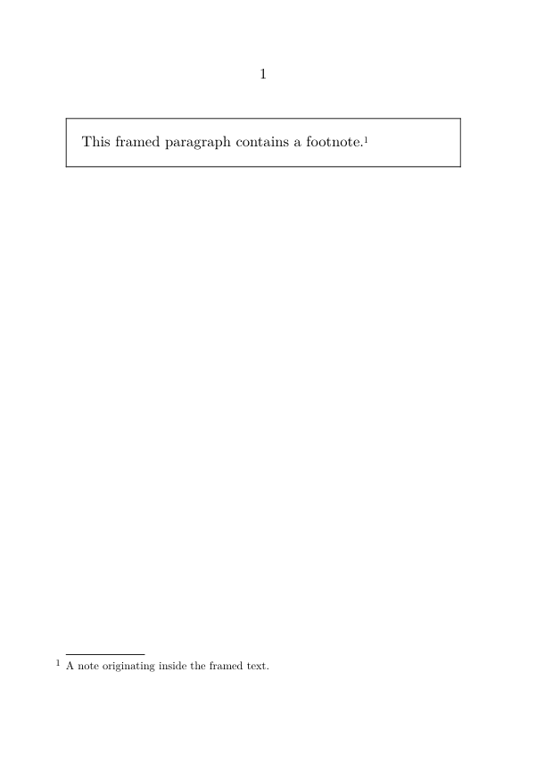
The note itself is not normally printed inside the frame. It belongs to the ordinary page-level footnote series and is migrated to the footnote area of the page.
This differs from a local note:
- an ordinary footnote inside a box is moved to the page footnote area;
- a local footnote is collected and placed explicitly inside or beneath a chosen structure.
Local notes inside a framed text
When the notes should remain visually attached to the framed material, use a local note context and place the notes explicitly inside the frame:
-
\setuppapersize[A6] \starttext \startlocalfootnotes \startframedtext [width=\textwidth] This framed passage contains a local note.% \footnote{This note is printed inside the framed structure.} \blank[medium] \placelocalfootnotes \stopframedtext \stoplocalfootnotes \stoptext
-
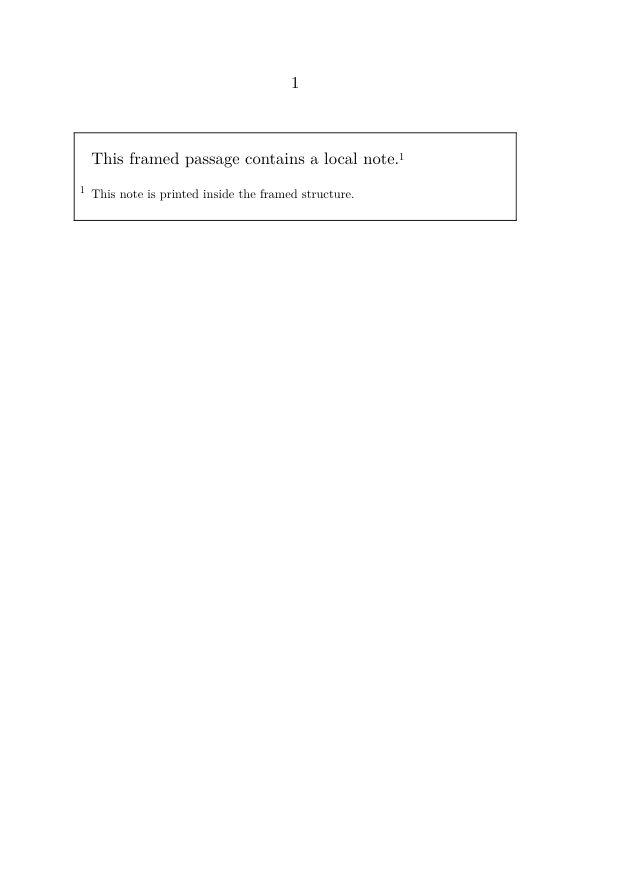
This construction is useful for:
- examples;
- side discussions;
- source extracts;
- editorial boxes;
- independent text panels.
The note series is local to the framed object and does not interfere with ordinary footnotes elsewhere in the document.
Older ConTeXt versions
In older ConTeXt versions, footnotes inside boxes sometimes required:
\automigrateinserts
This command enabled the migration of insertions such as footnotes from a box into the page-level insertion area.
Current LMTX handles many of these situations automatically. The command should therefore not be added by default to new examples unless a particular boxed construction still requires it.
Choosing between ordinary and local notes
The appropriate method depends on the editorial relationship between the note and the object:
| Requirement | Recommended method |
|---|---|
| The note belongs to the general commentary of the page. | Use an ordinary \footnote.
|
| The note must remain attached to a table, figure, or legend. | Use \startlocalfootnotes and \placelocalfootnotes.
|
| The note originates inside a box but should appear with ordinary page footnotes. | Use an ordinary \footnote and allow ConTeXt to migrate it.
|
| The note must be printed inside or directly beneath a box. | Use a local note context and place the notes explicitly. |
Local notes are therefore not merely footnotes with a different visual style. They define a temporary note scope associated with a particular part of the document.
Disabling notes and producing selective outputs
A document may need to be produced in several versions. A scholarly edition may include every note series, while a reading edition may omit critical or editorial notes. It is therefore important to distinguish between:
- postponing the placement of notes;
- disabling note processing entirely;
- conditionally including selected note series.
These operations do not have the same effect.
Postponing notes is not the same as disabling them
The setting
\setupnote [footnote] [location=text]
does not suppress footnotes. It stores them until they are printed explicitly with:
\placefootnotes
Similarly,
\setupnote [footnote] [location=none]
prevents automatic placement, but the notes are still registered and may be placed later with an appropriate placement command.
Use these settings when notes must remain part of the document but appear elsewhere.
Temporarily disabling all notes
The boolean \notesenabled controls whether note commands are processed.
To disable notes:
\notesenabledfalse
To enable them again:
\notesenabledtrue
-
\setuppapersize[A7] \starttext Notes are enabled here.% \footnote{This note is printed.} \notesenabledfalse This sentence contains a footnote command,% \footnote{This note is ignored.} but no note is produced. \notesenabledtrue Notes are enabled again.% \footnote{This note is printed, and numbering resumes.} \stoptext
-
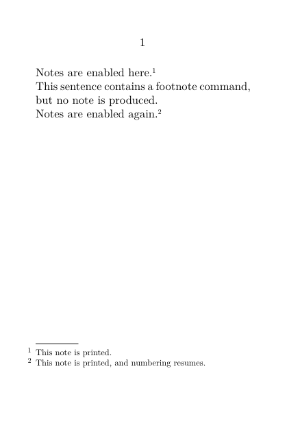
While notes are disabled:
- note commands are ignored;
- no note entry is created;
- the note counter does not advance.
When notes are enabled again, numbering resumes from its previous value.
The setting affects the note mechanism globally. It is therefore most useful for temporarily suppressing all notes in a portion of the document.
Producing a version without notes
A document-wide switch can be defined for producing either an annotated or an unannotated version.
-
\setuppapersize[A7] \defineboolean[shownotes] \setboolean[shownotes][yes] \doifelseboolean{shownotes} {\notesenabledtrue} {\notesenabledfalse} \starttext This text may be compiled with or without notes.% \footnote{This note appears only when \type{shownotes} is enabled.} \stoptext
Changing
\setboolean[shownotes][yes]
to
\setboolean[shownotes][no]
produces a version in which all note commands are ignored.
This method is suitable when the same source is used for:
- an annotated edition;
- a reading edition without notes;
- a draft in which notes are temporarily hidden.
Selecting individual note series
When a document contains several note series, it may be preferable to suppress one category while retaining the others.
A practical method is to place a conditional command around the series that may be omitted.
For example:
-
\setuppapersize[A7] \definenote [comment] [footnote] \defineboolean[showcomments] \setboolean[showcomments][yes] \define[1]\EditorialComment {\doifboolean{showcomments} {\comment{#1}}} \starttext This passage has an ordinary footnote.% \footnote{This note is always included.} This passage also has an editorial comment.% \EditorialComment {This note appears only when editorial comments are enabled.} \stoptext
-

The wrapper command
\define[1]\EditorialComment
{\doifboolean{showcomments}
{\comment{#1}}}
keeps the editorial function of the note visible in the source while allowing the series to be included or omitted.
Changing
\setboolean[showcomments][yes]
to
\setboolean[showcomments][no]
suppresses only the editorial comments. Ordinary footnotes remain active.
Disabling and postponing compared
| Method | Effect |
|---|---|
location=text
|
Notes are registered and printed later with a placement command. |
location=none
|
Automatic placement is suppressed, but the notes remain available for explicit placement. |
\notesenabledfalse
|
All note commands are ignored until notes are enabled again. |
| Conditional wrapper commands | Selected note series can be included or omitted independently. |
Use postponement when the notes remain part of the edition but must be placed elsewhere. Use conditional commands when the same source must produce editions with different levels of annotation.
Selecting several editorial layers
The same method can be extended to several note categories:
\defineboolean[showsources]
\defineboolean[showcomments]
\defineboolean[showtranslations]
\define[1]\SourceNote
{\doifboolean{showsources}
{\source{#1}}}
\define[1]\EditorialComment
{\doifboolean{showcomments}
{\comment{#1}}}
\define[1]\TranslationNote
{\doifboolean{showtranslations}
{\translation{#1}}}
A scholarly version might use:
\setboolean[showsources][yes] \setboolean[showcomments][yes] \setboolean[showtranslations][yes]
while a reading edition might use:
\setboolean[showsources][no] \setboolean[showcomments][no] \setboolean[showtranslations][yes]
This approach makes the editorial structure explicit and avoids changing the source text when a different output is required.
Interactive footnotes and link colours
When interaction is enabled, ConTeXt can turn note marks and note entries into clickable links.
A note mark in the running text normally links to the corresponding note entry. The note entry may in turn provide a link back to the place where the mark occurs.
Enable interaction with:
\setupinteraction [state=start]
A minimal example:
-
\setuppapersize[A7] \setupinteraction [state=start] \starttext This sentence contains an interactive footnote.% \footnote{The note mark links to this note entry.} \stoptext
-
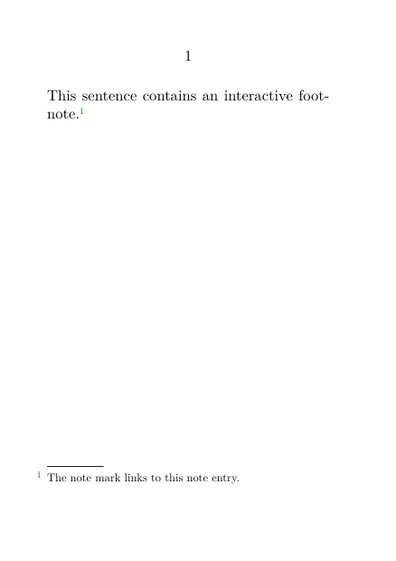
The exact appearance of the links depends on the interaction settings and on the PDF viewer.
Links to notes on the same page
ConTeXt distinguishes between links whose destination is on another page and links whose destination is on the same page.
The color key controls the colour normally used for links to another page, while contrastcolor controls links whose destination is on the current page.
Because a footnote and its mark often occur on the same page, the link may use contrastcolor rather than color.
For example:
-
\setuppapersize[A7] \setupinteraction [state=start, color=black, contrastcolor=black] \starttext This sentence contains an interactive footnote.% \footnote{Both the note mark and the note entry use black link text.} \stoptext
-
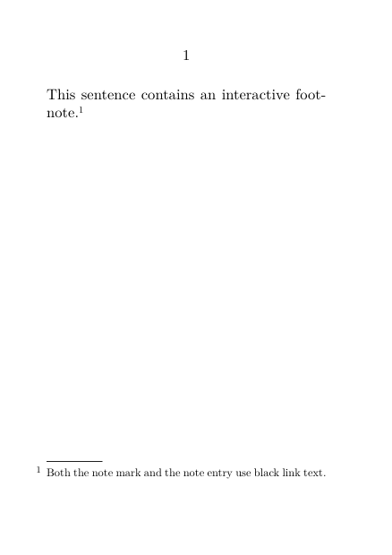
This prevents same-page footnote links from appearing in the default contrast colour.
Preserving the normal text colour
If links should not change the colour of the text, the colour values can be left empty:
\setupinteraction [state=start, color=, contrastcolor=]
A complete example:
-
\setuppapersize[A7] \setupinteraction [state=start, color=, contrastcolor=] \starttext The note mark remains in the normal text colour.% \footnote{The note entry also keeps the surrounding text colour.} \stoptext
-
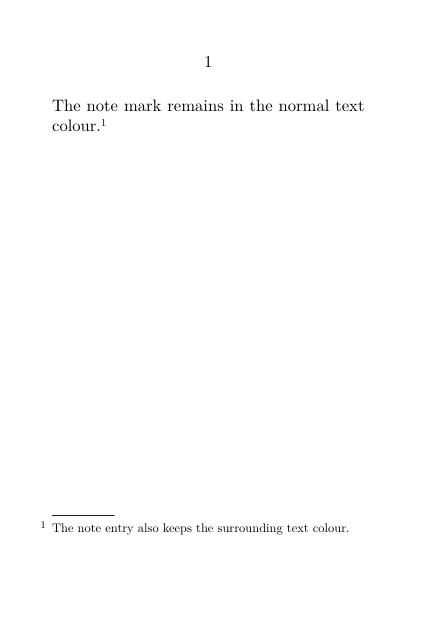
The links remain active even though no special link colour is applied.
Using different colours for same-page and cross-page links
The two keys may also be assigned different values:
\setupinteraction [state=start, color=blue, contrastcolor=darkred]
In this case:
-
links to another page use
color; -
links whose destination is on the same page use
contrastcolor.
This distinction applies not only to footnotes, but more generally to interactive references in the document.
Notes that move to another page
A long note may begin on a page different from the one containing its mark, or a note may be placed elsewhere with location=text.
In such cases, the link may no longer be a same-page link and may therefore use color instead of contrastcolor.
The resulting colour is determined by the actual destination in the final PDF, not merely by the type of reference.
Viewer behaviour
Interactive footnotes depend on PDF annotations and destinations. Their behaviour may vary slightly between PDF viewers.
When testing an interactive document, check that:
- clicking the note mark moves to the corresponding note entry;
- the return link, when present, moves back to the running text;
- same-page and cross-page links use the intended colours;
- the links remain usable in the intended PDF viewer.
The interaction settings affect the PDF interface only. They do not change the printed appearance of the note system unless link colours are also visible in print.
Notes in bidirectional documents
In bidirectional documents, footnotes may contain left-to-right and right-to-left material. ConTeXt can adapt the direction of the note block and the position of the footnote rule to the surrounding text.
Two distinct questions must be considered:
- the direction in which the note text is composed;
- the side on which the rule above the note block is placed.
These settings are related, but they are not identical.
Direction of the note block
The direction of a footnote is normally determined by the direction of the surrounding text at the point where the note is invoked.
This means that a footnote called from a right-to-left paragraph may be composed right-to-left, while a footnote called from a left-to-right paragraph may be composed left-to-right.
The direction of the note text itself does not necessarily determine the direction of the note block.
A mixed document may therefore contain both right-to-left and left-to-right footnotes on the same page.
Positioning the footnote rule
The position of the rule above the note block is controlled with the rule key of \setupnote.
To place the rule on the left:
\setupnote [footnote] [rule=left]
To place the rule on the right:
\setupnote [footnote] [rule=right]
For right-to-left documents, rule=right is often the most natural choice.
-
\setuppapersize[A7] \setupnote [footnote] [rule=right] \starttext A sentence with a footnote.% \footnote{The rule above the note block is placed on the right.} \stoptext
-
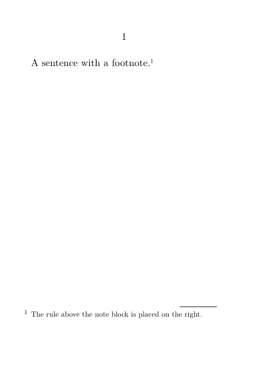
Choosing the rule dynamically
The value rule=paragraph lets ConTeXt choose the side of the rule according to the direction of the first paragraph in the note block:
\setupnote [footnote] [rule=paragraph]
If the first paragraph of the note block is right-to-left, the rule is placed on the right. Otherwise, it is placed on the left.
This can be useful in documents where the dominant direction changes from one page to another.
-
\setuppapersize[A7] \setupnote [footnote] [rule=paragraph] \starttext A sentence with a footnote.% \footnote{The rule position follows the direction of the first paragraph in the note block.} \stoptext
-
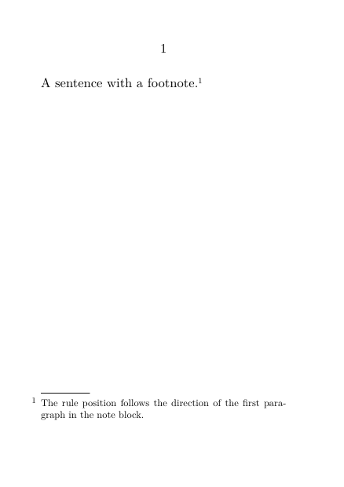
The first paragraph in the note block may be the continuation of a note that began on the previous page. Therefore, the chosen rule position may depend on the actual page break.
Custom footnote rules
For more elaborate rules, use the rulecommand key:
\setupnote [footnote] [rulecommand=\MyNoteRule]
The custom command is responsible for drawing the rule.
A simple example:
-
\setuppapersize[A7] \define\MyNoteRule {\blackrule [width=3cm, height=.4pt]} \setupnote [footnote] [rulecommand=\MyNoteRule] \starttext A sentence with a custom footnote rule.% \footnote{The rule above this note block is produced by a custom command.} \stoptext
-
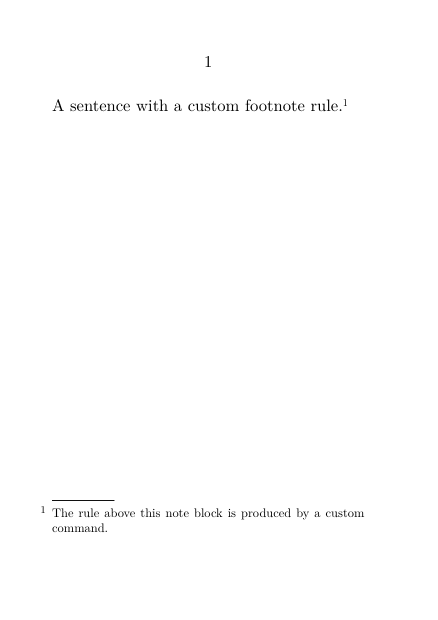
For more advanced customization, the definition of \normalnoterule in the ConTeXt source files can be used as a starting point.
Mixed-direction documents
In a document containing both left-to-right and right-to-left material, consider the following points:
- the direction at the note call influences the direction of the note block;
- the note text itself may contain material in another direction;
-
the rule position can be fixed with
rule=leftorrule=right; -
rule=paragraphallows the rule to follow the direction of the note block dynamically; - long notes that continue onto another page may affect the rule position on the following page.
The best setting depends on the editorial design of the document. A fixed rule position is usually more predictable, while rule=paragraph is more adaptable in genuinely bidirectional layouts.
Verbatim material in footnotes
Verbatim material requires special treatment because TeX normally reads and expands commands before the note is composed.
Short inline fragments can often be inserted with \type. Longer or spacing-sensitive material should be collected in a buffer and inserted with \typebuffer or \typeinlinebuffer.
Inline verbatim with
\type
For a short fragment, use \type directly inside the footnote:
-
\setuppapersize[A7] \starttext This sentence contains a note with inline code.% \footnote {The command \type{\setupnote[footnote][location=text]} postpones the placement of the footnotes.} \stoptext
-
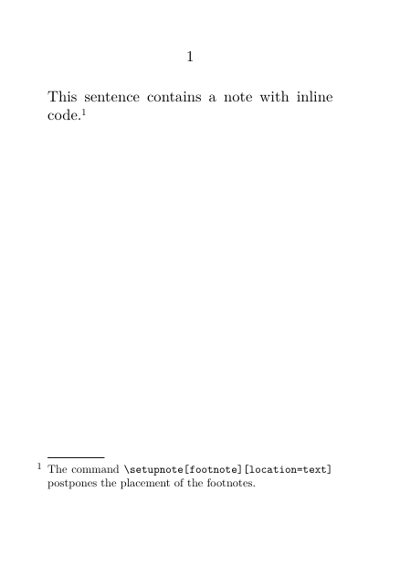
This method is convenient for short commands or filenames.
However, \type normalizes spacing. It may also add a space after a TeX command, depending on the selected compacting mode.
Preserving verbatim material with a buffer
When the exact content or spacing must be preserved, store the material in a buffer before using it in the footnote:
-
\setuppapersize[A6,landscape] \startbuffer[example] \doif{\a}{\b}{\c. x z} \stopbuffer \starttext The following note contains the buffered material.% \footnote{\typebuffer[example][option=tex]} \stoptext
-
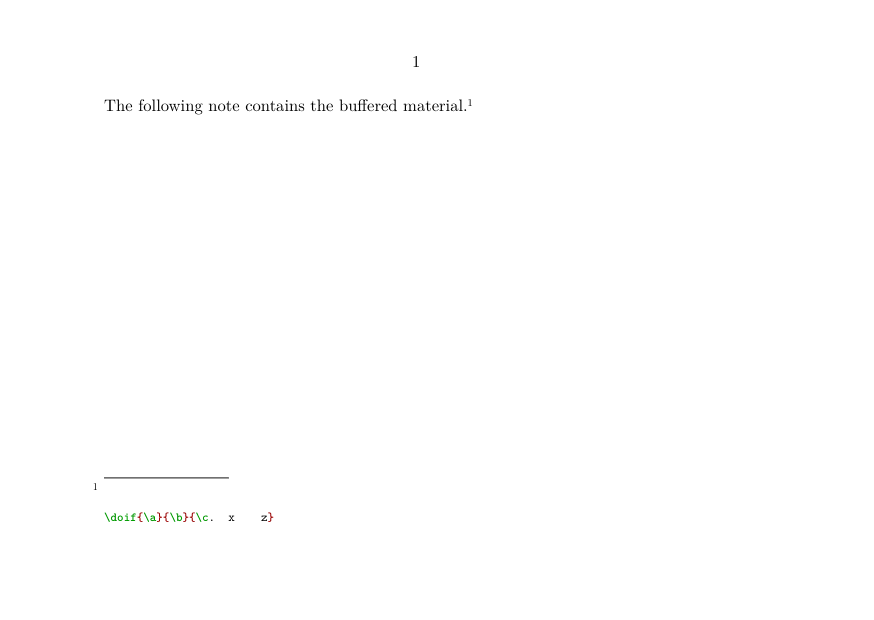
The buffer is read before the footnote is composed. This avoids problems caused by collecting verbatim material directly inside the argument of \footnote.
Inline buffered material
Use \typeinlinebuffer when the buffered content must remain inline and its spacing must be preserved:
-
\setuppapersize[A6,landscape] \startbuffer[example] \doif{\a}{\b}{\c. x z} \stopbuffer \starttext This sentence contains a note with inline buffered code.% \footnote {The original spacing is preserved: \typeinlinebuffer[example][option=tex].} \stoptext
-
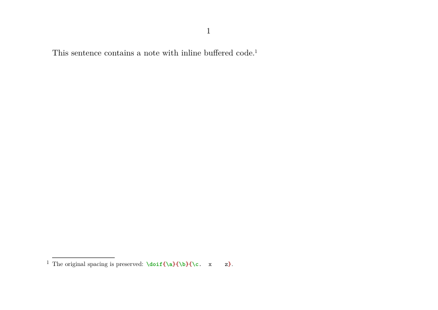
Unlike ordinary \type, \typeinlinebuffer does not insert or collapse spaces in the buffered material.
Comparing the available methods
The following example shows the difference between buffered and direct inline verbatim:
-
\setuppapersize[A6,landscape] \setuppagenumbering[location=none] \setupbodyfont[16pt] \startbuffer[example] \doif{\a}{\b}{\c. x z} \stopbuffer \starttext \typebuffer[example][option=tex]% \footnote{\typebuffer[example][option=tex]} \footnote {\type[option=tex] {\doif{\a}{\b}{\c. x z}}} \footnote {\type [option=tex, compact=absolute] {\doif{\a}{\b}{\c. x z}}} \footnote {\typeinlinebuffer[example][option=tex]} \stoptext
-
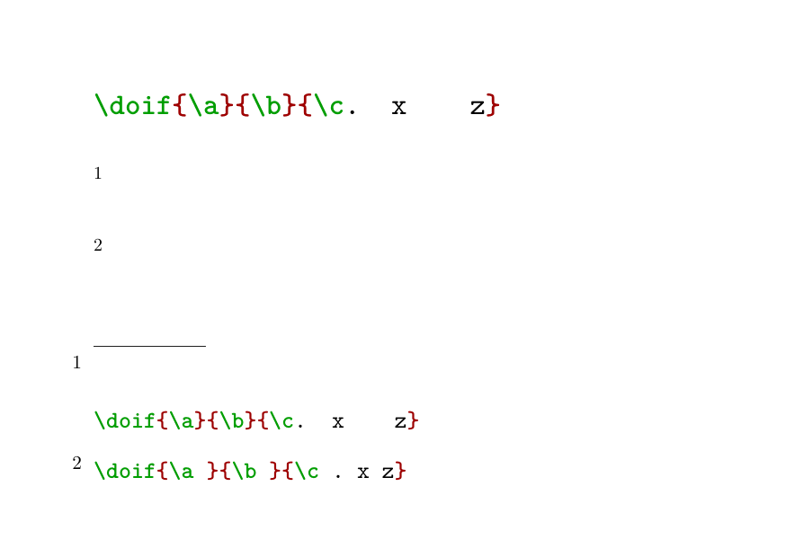
The methods behave differently:
| Method | Behaviour |
|---|---|
\type{...}
|
Suitable for short inline fragments; repeated spaces are normally compacted. |
\type[compact=absolute]{...}
|
Avoids the extra space normally inserted after TeX commands, but still compacts repeated spaces. |
\typebuffer
|
Typesets buffered material as a verbatim block. |
\typeinlinebuffer
|
Typesets buffered material inline while preserving its spaces. |
Choosing the appropriate method
Use:
-
\typefor short inline commands or filenames; -
\typebufferfor larger verbatim blocks; -
\typeinlinebufferwhen exact inline spacing must be retained.
For complex verbatim material, define the buffer before the note call rather than trying to collect the material directly inside \footnote.
Continuation marks for multi-page footnotes
A long footnote may begin on one page and continue on the next. In some editions, it is useful to indicate this explicitly to the reader.
The example below adds:
- a mark at the bottom of the page when a footnote continues onto the next page;
- a mark at the top of the following page when the footnote began on the preceding page.
The construction combines:
-
\definetextbackground, which attaches MetaPost graphics to the note text; -
\defineoverlay, which records the note area; -
the MetaPost variable
multikind, which indicates whether a text fragment is a single block, the first part, a middle part, or the last part of a multi-page block.
Defining the continuation marks
The following MetaPost graphic adds arrows according to the position of each fragment of the footnote:
\startuseMPgraphic{mp:continuedFootnote}
for i=1 upto nofmultipars :
if multikind[i] = "single" :
% The footnote begins and ends on the same page.
elseif multikind[i] = "first" :
% The footnote continues onto the next page.
label
("$\rightarrow$",
lrcorner footnotesBox
+ (0.8*EmWidth,0.2*LineHeight));
elseif multikind[i] = "middle" :
% The footnote continues from the previous page
% and onto the next page.
label
("$\rightarrow$",
lrcorner footnotesBox
+ (0.8*EmWidth,0.2*LineHeight));
label
("$\rightarrow$",
ulcorner footnotesBox
+ (-0.8*EmWidth,-0.6*LineHeight));
elseif multikind[i] = "last" :
% The footnote began on the previous page.
label
("$\rightarrow$",
ulcorner footnotesBox
+ (-0.8*EmWidth,-0.6*LineHeight));
fi;
endfor;
\stopuseMPgraphic
The values of multikind have the following meaning:
| Value | Meaning |
|---|---|
single
|
The text block begins and ends on the same page. |
first
|
The block begins on the current page and continues onto the next. |
middle
|
The block continues from the previous page and onto the next. |
last
|
The block began on the previous page and ends on the current page. |
Recording the footnote area
The continuation graphic needs access to the dimensions of the footnote block.
The following overlay stores the current overlay box in the MetaPost path footnotesBox:
\startuseMPgraphic{mp:footnotesBox}
path footnotesBox;
footnotesBox := OverlayBox;
\stopuseMPgraphic
\defineoverlay
[footnotesBox]
[\useMPgraphic{mp:footnotesBox}]
The overlay is then attached to the footnote series:
\setupnote [footnote] [background=footnotesBox]
Applying the text background
The continuation marks are attached to the footnote text with a text background:
\definetextbackground [continuedFootnote] [mp=mp:continuedFootnote, location=text]
A helper command wraps each long footnote in this background:
\define[1]\continuedfootnote
{\footnote
{\startcontinuedFootnote
#1
\stopcontinuedFootnote}}
Complete example
-
\usemodule[ipsum] \setuppapersize[A7] \startuseMPgraphic{mp:continuedFootnote} for i=1 upto nofmultipars : if multikind[i] = "single" : elseif multikind[i] = "first" : label ("→", lrcorner footnotesBox + (0.8*EmWidth,0.2*LineHeight)); elseif multikind[i] = "middle" : label ("→", lrcorner footnotesBox + (0.8*EmWidth,0.2*LineHeight)); label ("→", ulcorner footnotesBox + (-0.8*EmWidth,-0.6*LineHeight)); elseif multikind[i] = "last" : label ("→", ulcorner footnotesBox + (-0.8*EmWidth,-0.6*LineHeight)); fi; endfor; \stopuseMPgraphic \definetextbackground [continuedFootnote] [mp=mp:continuedFootnote, location=text] \startuseMPgraphic{mp:footnotesBox} path footnotesBox; footnotesBox := OverlayBox; \stopuseMPgraphic \defineoverlay [footnotesBox] [\useMPgraphic{mp:footnotesBox}] \define[1]\continuedfootnote {\footnote {\startcontinuedFootnote #1 \stopcontinuedFootnote}} \setupnote [footnote] [background=footnotesBox] \starttext A short paragraph with a long footnote.% \continuedfootnote{\dorecurse{12}{\ipsum}} \ipsum \stoptext
-
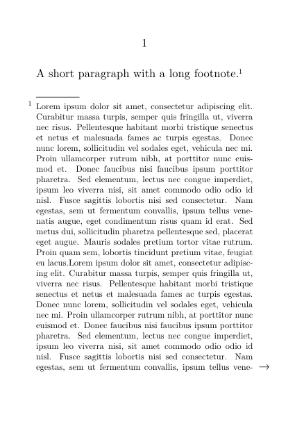
Adapting the continuation mark
The arrow can be replaced by another symbol or by short text.
For example:
label
("continued",
lrcorner footnotesBox
+ (1.5*EmWidth,0.2*LineHeight));
Possible alternatives include:
- an arrow;
- an ellipsis;
- a short phrase such as “continued”;
- a typographical ornament.
The position of the mark is controlled by the coordinates added to:
lrcorner footnotesBox
or:
ulcorner footnotesBox
These respectively refer to the lower-right and upper-left corners of the footnote area.
Limitations
This is an advanced customization rather than a standard footnote setting.
Its appearance depends on:
- the size of the footnote area;
- the body font;
- the line spacing;
- the selected symbol;
- the actual page breaks.
The offsets may therefore need to be adjusted for a particular document design.
A short test document with a deliberately long footnote should be used before applying the construction to a larger project.
Line notes and critical apparatus
Ordinary footnotes are attached to a point in the running text. Scholarly editions may require a more precise relationship between the note and the edited passage.
A critical note may need to identify:
- the line on which the passage occurs;
- the word or phrase being discussed, called the lemma ;
- a variant reading, explanation, source, or editorial comment;
- the apparatus level to which the note belongs.
ConTeXt provides line numbering and line-note mechanisms that can be combined to construct a critical apparatus.
Numbering the lines of a text
Use \startlinenumbering and \stoplinenumbering to place line numbers beside a passage:
-
\setuppapersize[A7] \starttext \startlinenumbering Arma virumque cano, Troiae qui primus ab oris Italiam, fato profugus, Laviniaque venit litora multum ille et terris iactatus et alto vi superum saevae memorem Iunonis ob iram. \stoplinenumbering \stoptext
-
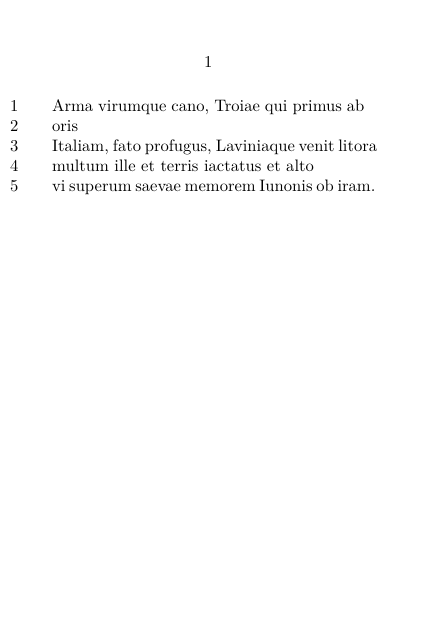
Line numbers provide stable locations that can be used by annotations and critical notes.
The appearance and frequency of the numbers can be adjusted with \setuplinenumbering:
\setuplinenumbering [step=1, location=text]
The exact settings depend on the layout and on whether every line or only selected lines should be numbered.
Defining a line-note series
A line-note series is defined with \definelinenote:
\definelinenote[criticalnote]
This creates the command:
\criticalnote{note text}
A minimal example:
-
\setuppapersize[A7] \definelinenote[criticalnote] \starttext \startlinenumbering Arma virumque cano, Troiae\criticalnote{Troiae] Trojae B} qui primus ab oris. \stoplinenumbering \stoptext
-
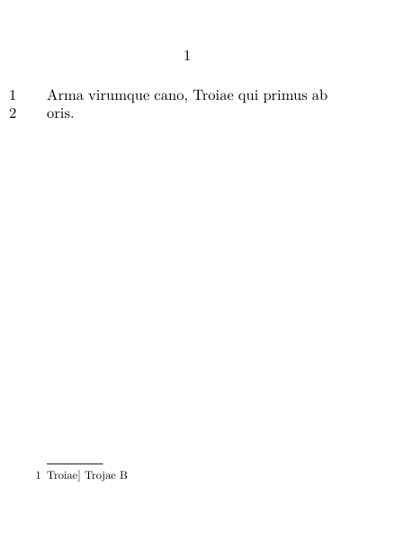
The note is associated with the numbered line containing its call.
Unlike an ordinary footnote, a line note is intended to identify the textual location of the annotated passage as part of the note apparatus.
Adding a lemma to the note
In a conventional critical apparatus, the note usually begins by repeating the word or phrase under discussion:
Troiae] Trojae B
Here:
-
Troiaeis the lemma printed in the edited text; -
]separates the lemma from the note; -
Trojaeis a variant reading; -
Bidentifies the witness containing that reading.
A semantic wrapper can insert the lemma in the text and repeat it automatically in the apparatus:
\define[2]\variant
{#1\criticalnote{#1] #2}}
The command is then used as follows:
\variant{Troiae}{Trojae B}
A complete example:
-
\setuppapersize[A7] \definelinenote[criticalnote] \define[2]\variant {#1\criticalnote{#1] #2}} \starttext \startlinenumbering Arma virumque cano, \variant{Troiae}{Trojae B} qui primus ab oris. Italiam, fato profugus, \variant{Laviniaque}{Lavinaque C} venit litora. \stoplinenumbering \stoptext
The wrapper separates the editorial function from the typographical implementation:
\variant{lemma}{critical information}
The editor therefore marks the structure of the note rather than manually repeating the same pattern throughout the source.
Notes on a phrase
The lemma need not be a single word. It may contain a complete phrase:
-
\setuppapersize[A7] \definelinenote[criticalnote] \define[2]\variant {#1\criticalnote{#1] #2}} \starttext \startlinenumbering multum ille et terris iactatus et alto \variant{vi superum} {vi deorum A; vi numinum B} saevae memorem Iunonis ob iram. \stoplinenumbering \stoptext
The entire first argument is printed in the text and repeated as the lemma in the apparatus.
Several line-note series
A scholarly edition may require several distinct kinds of line notes. For example:
- textual variants;
- linguistic explanations;
- translation notes.
Several series can be defined independently:
\definelinenote[criticalnote] \definelinenote[linguisticnote][n=2] \definelinenote[translationnote][n=3]
The value of n assigns the note series to a successive apparatus level.
Semantic commands can then be defined for each editorial function:
\define[2]\critical
{#1\criticalnote{#1] #2}}
\define[2]\linguistic
{#1\linguisticnote{#1] #2}}
\define[2]\translation
{#1\translationnote{#1] #2}}
A complete example:
-
\setuppapersize[A6] \definelinenote[criticalnote] \definelinenote[linguisticnote][n=2] \definelinenote[translationnote][n=3] \define[2]\critical {#1\criticalnote{#1] #2}} \define[2]\linguistic {#1\linguisticnote{#1] #2}} \define[2]\translation {#1\translationnote{#1] #2}} \starttext \startlinenumbering Arma virumque cano, \critical{Troiae}{Trojae B} qui primus ab oris. Italiam, fato profugus, \translation{Laviniaque} {the conjunction links Lavinia with litora} venit litora. multum ille et terris iactatus et alto \linguistic{vi superum} {an ablative phrase expressing means} saevae memorem Iunonis ob iram. \stoplinenumbering \stoptext
Each command performs two operations:
- it prints the lemma in the edited text;
- it sends the lemma and its annotation to the appropriate line-note series.
The resulting apparatus can therefore distinguish several editorial levels without mixing their counters or functions.
Configuring the apparatus levels
Each line-note series can be configured independently with \setupnote and \setupnotation:
\setupnote [criticalnote] [bodyfont=small, paragraph=yes] \setupnotation [criticalnote] [alternative=serried, width=broad, distance=.5em, display=no]
The same pattern can be applied to the other levels:
\setupnote [linguisticnote] [bodyfont=small, paragraph=yes] \setupnote [translationnote] [bodyfont=small, paragraph=yes]
This makes it possible to control:
- the body font;
- the interline spacing;
- the compactness of the entries;
- the distance between the lemma and the note;
- the order of the apparatus levels.
Line notes and ordinary footnotes
Line notes and ordinary footnotes may coexist in the same document.
Use ordinary footnotes for material attached to the document as a whole, such as:
- bibliographical references;
- general commentary;
- publication information.
Use line notes for material attached directly to a numbered textual passage, such as:
- variant readings;
- conjectures;
- linguistic glosses;
- translation choices;
- manuscript evidence.
The distinction is structural rather than merely visual.
| Note type | Typical relation to the text |
|---|---|
| Ordinary footnote | Attached to a point in the running text. |
| Line note | Attached to a numbered line and usually to a lemma. |
| Critical apparatus entry | Records a structured editorial statement about a lemma, reading, or witness. |
From line notes to a critical apparatus
A line-note series becomes part of a critical apparatus when the notes consistently encode relationships such as:
lemma variant reading witness editorial intervention source degree of certainty
A simple ConTeXt source may encode this information directly:
\critical{Troiae}{Trojae B}
This is sufficient for many printed editions, but the second argument remains a typographically prepared string. ConTeXt does not yet know independently that:
-
Trojaeis a reading; -
Bis a witness; - the variant is orthographic rather than substantive.
For larger scholarly projects, these elements may instead be stored as structured data, for example in TEI XML, and transformed into one or more ConTeXt apparatus levels.
Further development
The examples above show how line notes can be used to build a simple lemma-based apparatus directly in ConTeXt. More complex editions may require several readings, witnesses, omissions, additions, conjectures, or multiple apparatus levels.
For a systematic treatment of these methods, see:
Building a critical apparatus in ConTeXt
When the critical information must be stored independently of its printed form, a structured source such as TEI XML becomes preferable. See: